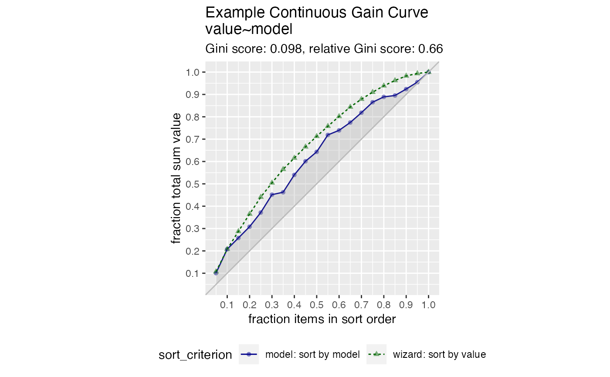

Plot the cumulative gain curve of a sort-order.
GainCurvePlot(frame, xvar, truthVar, title, ..., estimate_sig = FALSE, large_count = 1000, truth_target = NULL)
| frame | data frame to get values from |
|---|---|
| xvar | name of the independent (input or model score) column in frame |
| truthVar | name of the dependent (output or result to be modeled) column in frame |
| title | title to place on plot |
| ... | no unnamed argument, added to force named binding of later arguments. |
| estimate_sig | logical, if TRUE compute significance. |
| large_count | numeric, upper bound target for number of plotting points. |
| truth_target | if not NULL compare to this scalar value. |
The use case for this visualization is to compare a predictive model score to an actual outcome (either binary (0/1) or continuous). In this case the gain curve plot measures how well the model score sorts the data compared to the true outcome value.
The x-axis represents the fraction of items seen when sorted by score, and the y-axis represents the cumulative summed true outcome represented by the items seen so far. See, for example, https://www.ibm.com/support/knowledgecenter/SSLVMB_24.0.0/spss/tutorials/mlp_bankloan_outputtype_02.html.
For comparison, GainCurvePlot also plots the "wizard curve": the gain curve when the
data is sorted according to its true outcome.
To improve presentation quality, the plot is limited to approximately large_count points (default: 1000).
For larger data sets, the data is appropriately randomly sampled down before plotting.
set.seed(34903490) y = abs(rnorm(20)) + 0.1 x = abs(y + 0.5*rnorm(20)) frm = data.frame(model=x, value=y) WVPlots::GainCurvePlot(frm, "model", "value", title="Example Continuous Gain Curve")